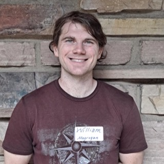

Nirab Hossain
PhD student
Impact of crowding on collective search
Current students and postdoctoral researchers at the University of Colorado Boulder.
PhD student
Impact of crowding on collective search
PhD student · coadvised with Orit Peleg
Dynamical wave theory of spider vibrosensation in webs
PhD student
Synaptic resource dynamics of neural–astrocyte circuits

PhD student · coadvised with Nancy Rodriguez
Chemosensory-guided search during honeybee trophallaxis
PhD student
Emergence of visual illusions in delay-coupled neural circuits
Master’s student
Spatiotemporal template matching for health prediction from human EEG
Master’s student
Polling and election prediction in stochastic voting models
Postdoctoral fellow · coadvised with David DiGregorio
Temporal learning in recurrent neural networks with short-term plasticity
PhD students. There is no direct admission to individual research groups at CU Boulder. Students are admitted by the Department of Applied Mathematics and settle on an advisor during the first year, so the step that matters is the departmental application, due December 1. Students drawn to quantitative biology may also apply to IQ Biology by November 15. It is a certificate taken alongside a departmental PhD, so it is an additional application rather than a substitute for the one above. Naming the group and its areas in either is useful. Writing to me beforehand is not necessary and does not affect admission.
Postdoctoral researchers. I take on postdocs when I have funding for a particular project, and the department runs the Keith Julien Visiting Assistant Professorships on its own annual cycle. Both are advertised on the department site and on MathJobs. If nothing is posted there, nothing is open. If you would like to name me as a potential advisor for a Julien VAP, write to me with your current CV and a summary of some research problems you would like to work on with me.
CU undergraduates and master’s students. Write to me with the courses you have taken and the kind of problem you would like to work on.
Much of the group’s work is joint, with experimentalists and theorists in roughly equal measure.